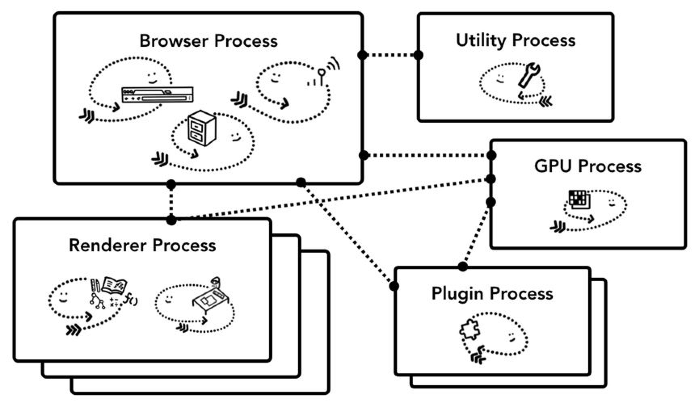

title: 浏览器的工作原理
type: tags
我们希望知道在浏览器地址栏中输入URL到页面展现的短短几秒浏览器究竟做了什么
以Chrome为例，它由多个进程组成，每个进程都有自己的指责，他们相互配合完成浏览器的整体功能，每个进程又包含多个线程，一个进程内地多个线程也会协同的工作，配合完成所在进程的指责
进程就像一个有边界的生产厂商，而线程就像厂间内的员工，可以自己做自己的事情，也可以相互配合做同一件事。
启动应用–>创建一个进程，操作系统会为进程分配一部分内存，应用所有的状态都会保存在这块内存中；应用也可能创建多个线程来辅助工作，创建的线程共享这部分内存中的数据，应用关闭，进程会被终结，操作系统会释放相关的内存。
同时一个进程还可以要求操作系统生成另一个进程来执行不同的任务，系统会为新的进程分配独立的内存，两个进程之间可以使用 IPC （Inter Process Communication）进行通信。如果一个工作进程反应迟钝，重启这个进程不会影响应用其它进程的工作。
以Chrome为例,Chrome采用多进程架构，其顶层存在一个Browser process用以协调浏览器的其他进程
